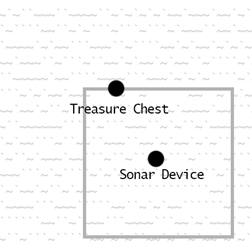
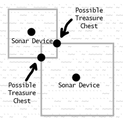
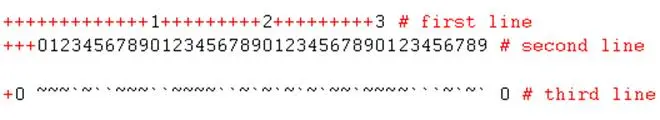
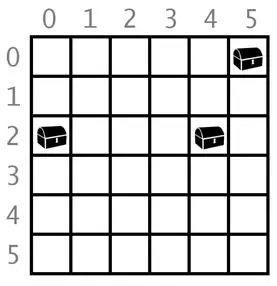
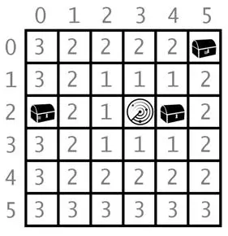

|
|
Chapter 13 |
Sonar Treasure Hunt |
Topics Covered In This Chapter:
· Data structures
· The remove() list method
· The isdigit() string method
· The sys.exit() function
The game in this chapter is the first to make use of Cartesian coordinates that you learned about in Chapter 12. The game also has data structures (which is just a fancy way of saying complex variables such as those that contain lists of lists.) As the games you program become more complicated, you’ll need to organize your data in data structures.
In this chapter’s game, the player places sonar devices at various places in the ocean to locate sunken treasure chests. Sonar is a technology that ships use to locate objects under the sea. The sonar devices (in this game) will tell the player how far away the closest treasure chest is, but not in what direction. But by placing multiple sonar devices down, the player can figure out where the treasure chest is.
There are three chests to collect, but the player has only sixteen sonar devices to use to find them. Imagine that you could not see the treasure chest in the following picture. Because each sonar device can only find the distance, not direction, the possible places the treasure could be is anywhere in a square ring around the sonar device (see Figure 13-1).

Figure 13-1: The sonar device’s square ring touches the (hidden) treasure chest.

Figure 13-2: Combining multiple square rings of shows where treasure chests could be.
But multiple sonar devices working together can narrow it to an exact place where the rings intersect each other. See Figure 13-2. (Normally these rings would be circles, but this game will use squares to make programming it easier.)
S O N A R !
Would you like to view the instructions? (yes/no)
no
1 2 3 4 5
012345678901234567890123456789012345678901234567890123456789
0 `~~~`~~~`~`~~`~~~~~`~``~~~~`~`~~~`~``~``~~````~`~```~`~~~~`` 0
1 ~`~~~```~~~~`~`~~`~``~`~~```~`~`~~`~`~~~~~~`~`````~`~~`~~~~` 1
2 `~``~``~~~`~``~`~`~``~`````~~~~~~~~~`~`~~`~``~~~~~```~~`~``` 2
3 ``~`~~``~`~``~`~`~`~~`~`~~`~`~``~~~`~``~````~``````~~~~``~`` 3
4 ``~~`~~~``~``~~````~`~`~`~``~~~``~~```~`~~`~~`~`~`~~`~~~~``` 4
5 ~~```~~~`~`~~``~`~``~```~`~~`~~~~~`~~``~`~`~~~`~~`~`~`~`~~~` 5
6 ``~~`````~~~~`~`~~~```~~~~`~~`~~`~~```~~`~~~`~~~``~`~~~``~~~ 6
7 `~`````````~```~``~``~~`~~~~`~~``~``~~~```~`~~`~``~``~~```~~ 7
8 `~````~```~`~~`~~~`~~``~~~``~`~``~~~``~`~`````~`~~```~`~~~~` 8
9 ~```~~`~`~``~``~~``~``~```~`~``~~~~`~`~`~~~`~`~`~`~~~``~~``` 9
10 ```~`~```~``~``~`~~`~``~````~``~~~`~~`~~``~~~~`~~~`~`~~````~ 10
11 ```~```~~~`~```~~`~~~`~`````~`~~`~`~~`~~`~`~~`~~~````~````~` 11
12 ~~~`~`~~~``~~~~~~`~~~``~`~`~~`~`~~`~```~~~```~~`~~`~``~``~`~ 12
13 `~~````~~``~```~~~`~```~`~~~~~~~~~`~~``~~~~~`````~`~`~``~~~~ 13
14 `~~`~`~````~```~`~`~```~~`~~~~`~```~``~``~``~~~````~~``````~ 14
012345678901234567890123456789012345678901234567890123456789
1 2 3 4 5
You have 16 sonar devices left. 3 treasure chests remaining.
Where do you want to drop the next sonar device? (0-59 0-14) (or type quit)
10 10
1 2 3 4 5
012345678901234567890123456789012345678901234567890123456789
0 `~~~`~~~`~`~~`~~~~~`~``~~~~`~`~~~`~``~``~~````~`~```~`~~~~`` 0
1 ~`~~~```~~~~`~`~~`~``~`~~```~`~`~~`~`~~~~~~`~`````~`~~`~~~~` 1
2 `~``~``~~~`~``~`~`~``~`````~~~~~~~~~`~`~~`~``~~~~~```~~`~``` 2
3 ``~`~~``~`~``~`~`~`~~`~`~~`~`~``~~~`~``~````~``````~~~~``~`` 3
4 ``~~`~~~``~``~~````~`~`~`~``~~~``~~```~`~~`~~`~`~`~~`~~~~``` 4
5 ~~```~~~`~`~~``~`~``~```~`~~`~~~~~`~~``~`~`~~~`~~`~`~`~`~~~` 5
6 ``~~`````~~~~`~`~~~```~~~~`~~`~~`~~```~~`~~~`~~~``~`~~~``~~~ 6
7 `~`````````~```~``~``~~`~~~~`~~``~``~~~```~`~~`~``~``~~```~~ 7
8 `~````~```~`~~`~~~`~~``~~~``~`~``~~~``~`~`````~`~~```~`~~~~` 8
9 ~```~~`~`~``~``~~``~``~```~`~``~~~~`~`~`~~~`~`~`~`~~~``~~``` 9
10 ```~`~```~5`~``~`~~`~``~````~``~~~`~~`~~``~~~~`~~~`~`~~````~ 10
11 ```~```~~~`~```~~`~~~`~`````~`~~`~`~~`~~`~`~~`~~~````~````~` 11
12 ~~~`~`~~~``~~~~~~`~~~``~`~`~~`~`~~`~```~~~```~~`~~`~``~``~`~ 12
13 `~~````~~``~```~~~`~```~`~~~~~~~~~`~~``~~~~~`````~`~`~``~~~~ 13
14 `~~`~`~````~```~`~`~```~~`~~~~`~```~``~``~``~~~````~~``````~ 14
012345678901234567890123456789012345678901234567890123456789
1 2 3 4 5
Treasure detected at a distance of 5 from the sonar device.
You have 15 sonar devices left. 3 treasure chests remaining.
Where do you want to drop the next sonar device? (0-59 0-14) (or type quit)
15 6
1 2 3 4 5
012345678901234567890123456789012345678901234567890123456789
0 `~~~`~~~`~`~~`~~~~~`~``~~~~`~`~~~`~``~``~~````~`~```~`~~~~`` 0
1 ~`~~~```~~~~`~`~~`~``~`~~```~`~`~~`~`~~~~~~`~`````~`~~`~~~~` 1
2 `~``~``~~~`~``~`~`~``~`````~~~~~~~~~`~`~~`~``~~~~~```~~`~``` 2
3 ``~`~~``~`~``~`~`~`~~`~`~~`~`~``~~~`~``~````~``````~~~~``~`` 3
4 ``~~`~~~``~``~~````~`~`~`~``~~~``~~```~`~~`~~`~`~`~~`~~~~``` 4
5 ~~```~~~`~`~~``~`~``~```~`~~`~~~~~`~~``~`~`~~~`~~`~`~`~`~~~` 5
6 ``~~`````~~~~`~4~~~```~~~~`~~`~~`~~```~~`~~~`~~~``~`~~~``~~~ 6
7 `~`````````~```~``~``~~`~~~~`~~``~``~~~```~`~~`~``~``~~```~~ 7
8 `~````~```~`~~`~~~`~~``~~~``~`~``~~~``~`~`````~`~~```~`~~~~` 8
9 ~```~~`~`~``~``~~``~``~```~`~``~~~~`~`~`~~~`~`~`~`~~~``~~``` 9
10 ```~`~```~5`~``~`~~`~``~````~``~~~`~~`~~``~~~~`~~~`~`~~````~ 10
11 ```~```~~~`~```~~`~~~`~`````~`~~`~`~~`~~`~`~~`~~~````~````~` 11
12 ~~~`~`~~~``~~~~~~`~~~``~`~`~~`~`~~`~```~~~```~~`~~`~``~``~`~ 12
13 `~~````~~``~```~~~`~```~`~~~~~~~~~`~~``~~~~~`````~`~`~``~~~~ 13
14 `~~`~`~````~```~`~`~```~~`~~~~`~```~``~``~``~~~````~~``````~ 14
012345678901234567890123456789012345678901234567890123456789
1 2 3 4 5
Treasure detected at a distance of 4 from the sonar device.
You have 14 sonar devices left. 3 treasure chests remaining.
Where do you want to drop the next sonar device? (0-59 0-14) (or type quit)
15 10
1 2 3 4 5
012345678901234567890123456789012345678901234567890123456789
0 `~~~`~~~`~`~~`~~~~~`~``~~~~`~`~~~`~``~``~~````~`~```~`~~~~`` 0
1 ~`~~~```~~~~`~`~~`~``~`~~```~`~`~~`~`~~~~~~`~`````~`~~`~~~~` 1
2 `~``~``~~~`~``~`~`~``~`````~~~~~~~~~`~`~~`~``~~~~~```~~`~``` 2
3 ``~`~~``~`~``~`~`~`~~`~`~~`~`~``~~~`~``~````~``````~~~~``~`` 3
4 ``~~`~~~``~``~~````~`~`~`~``~~~``~~```~`~~`~~`~`~`~~`~~~~``` 4
5 ~~```~~~`~`~~``~`~``~```~`~~`~~~~~`~~``~`~`~~~`~~`~`~`~`~~~` 5
6 ``~~`````~~~~`~O~~~```~~~~`~~`~~`~~```~~`~~~`~~~``~`~~~``~~~ 6
7 `~`````````~```~``~``~~`~~~~`~~``~``~~~```~`~~`~``~``~~```~~ 7
8 `~````~```~`~~`~~~`~~``~~~``~`~``~~~``~`~`````~`~~```~`~~~~` 8
9 ~```~~`~`~``~``~~``~``~```~`~``~~~~`~`~`~~~`~`~`~`~~~``~~``` 9
10 ```~`~```~O`~``O`~~`~``~````~``~~~`~~`~~``~~~~`~~~`~`~~````~ 10
11 ```~```~~~`~```~~`~~~`~`````~`~~`~`~~`~~`~`~~`~~~````~````~` 11
12 ~~~`~`~~~``~~~~~~`~~~``~`~`~~`~`~~`~```~~~```~~`~~`~``~``~`~ 12
13 `~~````~~``~```~~~`~```~`~~~~~~~~~`~~``~~~~~`````~`~`~``~~~~ 13
14 `~~`~`~````~```~`~`~```~~`~~~~`~```~``~``~``~~~````~~``````~ 14
012345678901234567890123456789012345678901234567890123456789
1 2 3 4 5
You have found a sunken treasure chest!
You have 13 sonar devices left. 2 treasure chests remaining.
Where do you want to drop the next sonar device? (0-59 0-14) (or type quit)
...skipped over for brevity...
1 2 3 4 5
012345678901234567890123456789012345678901234567890123456789
0 `~~~`~~~`~`~~`~~~~~`~``~~~~`~`~~~`~``~``~~````~`~```~`~~~~`` 0
1 ~`~~~```~~~~`~`~~`~``~`~~```~O~`~~`~`~~~~~~`~`````~`~~`~~~~` 1
2 `~``~``~~~`~``~`~`~``~`````~~O~~~O~~`~`~~`~``~~~~~```~~`~``` 2
3 ``~3~~``8`~``~`~`~`~~`~`~~`~`~``~~~`~`O~````~``````~~~~``~`` 3
4 ``~~`~~~``~``~~````~`~`~`~O`~~O``~~```~`~~`~~`~`~`~~`~~~~``` 4
5 ~~```~~~`~`~~``~`~``~```~`~~`~~~~~`~~``~`~`~~~`~~`~`~`~`~~~` 5
6 ``~~`````~~~~`~O~~~```~~~~`~~`~~`~~```~~`~~~`~~~``O`~~~``~~~ 6
7 `~`````````~```~``~``~~`~~~~`~~``~``~~~```~`~~`~``~``~~```~~ 7
8 `~````~```~`~~`~~~`~~``~~~``~`~``~~~``~`O```0`~`~~```~`~~~~` 8
9 ~```~~`~`~``~``~~``~``~```~O~``~~~~`~`~`~~~`~`~`~`~~~``~~``` 9
10 ```~`~```~O`~``O`~~`~``~````~``~~~`~~`~~``~~~~`~~~`~`~~````~ 10
11 ```~```~~~`~```~~`~~~`~`````~`~~`~`~~`~~`~`~~`~~~````~````~` 11
12 ~~~`~`~~~``~~~~~~`~~~``~`~`~~`~`~~`~```~~~```~~`~~`~``~``~`~ 12
13 `~~````~~``~```~~~`~```~`~~~~~~~~~`~~``~~~~~`````~`~`~``~~~~ 13
14 `~~`~`~````~```~`~`~```~~`~~~~`~```~``~``~``~~~````~~``````~ 14
012345678901234567890123456789012345678901234567890123456789
1 2 3 4 5
Treasure detected at a distance of 4 from the sonar device.
We've run out of sonar devices! Now we have to turn the ship around and head
for home with treasure chests still out there! Game over.
The remaining chests were here:
0, 4
Do you want to play again? (yes or no)
no
Below is the source code for the game. Type it into a new file, then save the file as sonar.py and run it by pressing the F5 key. If you get errors after typing this code in, compare the code you typed to the book’s code with the online diff tool at http://invpy.com/diff/sonar.
sonar.py
1. # Sonar
2.
3. import random
4. import sys
5.
6. def drawBoard(board):
7. # Draw the board data structure.
8.
9. hline = ' ' # initial space for the numbers down the left side of the board
10. for i in range(1, 6):
11. hline += (' ' * 9) + str(i)
12.
13. # print the numbers across the top
14. print(hline)
15. print(' ' + ('0123456789' * 6))
16. print()
17.
18. # print each of the 15 rows
19. for i in range(15):
20. # single-digit numbers need to be padded with an extra space
21. if i < 10:
22. extraSpace = ' '
23. else:
24. extraSpace = ''
25. print('%s%s %s %s' % (extraSpace, i, getRow(board, i), i))
26.
27. # print the numbers across the bottom
28. print()
29. print(' ' + ('0123456789' * 6))
30. print(hline)
31.
32.
33. def getRow(board, row):
34. # Return a string from the board data structure at a certain row.
35. boardRow = ''
36. for i in range(60):
37. boardRow += board[i][row]
38. return boardRow
39.
40. def getNewBoard():
41. # Create a new 60x15 board data structure.
42. board = []
43. for x in range(60): # the main list is a list of 60 lists
44. board.append([])
45. for y in range(15): # each list in the main list has 15 single-character strings
46. # use different characters for the ocean to make it more readable.
47. if random.randint(0, 1) == 0:
48. board[x].append('~')
49. else:
50. board[x].append('`')
51. return board
52.
53. def getRandomChests(numChests):
54. # Create a list of chest data structures (two-item lists of x, y int coordinates)
55. chests = []
56. for i in range(numChests):
57. chests.append([random.randint(0, 59), random.randint(0, 14)])
58. return chests
59.
60. def isValidMove(x, y):
61. # Return True if the coordinates are on the board, otherwise False.
62. return x >= 0 and x <= 59 and y >= 0 and y <= 14
63.
64. def makeMove(board, chests, x, y):
65. # Change the board data structure with a sonar device character. Remove treasure chests
66. # from the chests list as they are found. Return False if this is an invalid move.
67. # Otherwise, return the string of the result of this move.
68. if not isValidMove(x, y):
69. return False
70.
71. smallestDistance = 100 # any chest will be closer than 100.
72. for cx, cy in chests:
73. if abs(cx - x) > abs(cy - y):
74. distance = abs(cx - x)
75. else:
76. distance = abs(cy - y)
77.
78. if distance < smallestDistance: # we want the closest treasure chest.
79. smallestDistance = distance
80.
81. if smallestDistance == 0:
82. # xy is directly on a treasure chest!
83. chests.remove([x, y])
84. return 'You have found a sunken treasure chest!'
85. else:
86. if smallestDistance < 10:
87. board[x][y] = str(smallestDistance)
88. return 'Treasure detected at a distance of %s from the sonar device.' % (smallestDistance)
89. else:
90. board[x][y] = 'O'
91. return 'Sonar did not detect anything. All treasure chests out of range.'
92.
93.
94. def enterPlayerMove():
95. # Let the player type in their move. Return a two-item list of int xy coordinates.
96. print('Where do you want to drop the next sonar device? (0-59 0-14) (or type quit)')
97. while True:
98. move = input()
99. if move.lower() == 'quit':
100. print('Thanks for playing!')
101. sys.exit()
102.
103. move = move.split()
104. if len(move) == 2 and move[0].isdigit() and move[1].isdigit() and isValidMove(int(move[0]), int(move[1])):
105. return [int(move[0]), int(move[1])]
106. print('Enter a number from 0 to 59, a space, then a number from 0 to 14.')
107.
108.
109. def playAgain():
110. # This function returns True if the player wants to play again, otherwise it returns False.
111. print('Do you want to play again? (yes or no)')
112. return input().lower().startswith('y')
113.
114.
115. def showInstructions():
116. print('''Instructions:
117. You are the captain of the Simon, a treasure-hunting ship. Your current mission
118. is to find the three sunken treasure chests that are lurking in the part of the
119. ocean you are in and collect them.
120.
121. To play, enter the coordinates of the point in the ocean you wish to drop a
122. sonar device. The sonar can find out how far away the closest chest is to it.
123. For example, the d below marks where the device was dropped, and the 2's
124. represent distances of 2 away from the device. The 4's represent
125. distances of 4 away from the device.
126.
127. 444444444
128. 4 4
129. 4 22222 4
130. 4 2 2 4
131. 4 2 d 2 4
132. 4 2 2 4
133. 4 22222 4
134. 4 4
135. 444444444
136. Press enter to continue...''')
137. input()
138.
139. print('''For example, here is a treasure chest (the c) located a distance of 2 away
140. from the sonar device (the d):
141.
142. 22222
143. c 2
144. 2 d 2
145. 2 2
146. 22222
147.
148. The point where the device was dropped will be marked with a 2.
149.
150. The treasure chests don’t move around. Sonar devices can detect treasure
151. chests up to a distance of 9. If all chests are out of range, the point
152. will be marked with O
153.
154. If a device is directly dropped on a treasure chest, you have discovered
155. the location of the chest, and it will be collected. The sonar device will
156. remain there.
157.
158. When you collect a chest, all sonar devices will update to locate the next
159. closest sunken treasure chest.
160. Press enter to continue...''')
161. input()
162. print()
163.
164.
165. print('S O N A R !')
166. print()
167. print('Would you like to view the instructions? (yes/no)')
168. if input().lower().startswith('y'):
169. showInstructions()
170.
171. while True:
172. # game setup
173. sonarDevices = 16
174. theBoard = getNewBoard()
175. theChests = getRandomChests(3)
176. drawBoard(theBoard)
177. previousMoves = []
178.
179. while sonarDevices > 0:
180. # Start of a turn:
181.
182. # show sonar device/chest status
183. if sonarDevices > 1: extraSsonar = 's'
184. else: extraSsonar = ''
185. if len(theChests) > 1: extraSchest = 's'
186. else: extraSchest = ''
187. print('You have %s sonar device%s left. %s treasure chest%s remaining.' % (sonarDevices, extraSsonar, len(theChests), extraSchest))
188.
189. x, y = enterPlayerMove()
190. previousMoves.append([x, y]) # we must track all moves so that sonar devices can be updated.
191.
192. moveResult = makeMove(theBoard, theChests, x, y)
193. if moveResult == False:
194. continue
195. else:
196. if moveResult == 'You have found a sunken treasure chest!':
197. # update all the sonar devices currently on the map.
198. for x, y in previousMoves:
199. makeMove(theBoard, theChests, x, y)
200. drawBoard(theBoard)
201. print(moveResult)
202.
203. if len(theChests) == 0:
204. print('You have found all the sunken treasure chests! Congratulations and good game!')
205. break
206.
207. sonarDevices -= 1
208.
209. if sonarDevices == 0:
210. print('We\'ve run out of sonar devices! Now we have to turn the ship around and head')
211. print('for home with treasure chests still out there! Game over.')
212. print(' The remaining chests were here:')
213. for x, y in theChests:
214. print(' %s, %s' % (x, y))
215.
216. if not playAgain():
217. sys.exit()
Before trying to understand the source code, play the game a few times first to understand what is going on. The Sonar game uses lists of lists and other such complicated variables, called data structures. Data structures are variables that store arrangements of values to represent something. For example, in the Tic Tac Toe chapter, a Tic Tac Toe board data structure was a list of strings. The string represented an X, O, or empty space and the index of the string in the list represented the space on the board. The Sonar game will have similar data structures for the locations of treasure chests and sonar devices.
How the Code Works
1. # Sonar
2.
3. import random
4. import sys
Lines 3 and 4 import modules random and sys. The sys module contains the exit() function, which causes the program to terminate immediately. This function is used later in the program.
Drawing the Game Board
6. def drawBoard(board):
The Sonar game’s board is an ASCII art ocean with X- and Y-axis coordinates around it. The back tick (`) and tilde (~) characters are located next to the 1 key on your keyboard will be used for the ocean waves. It looks like this:
1 2 3 4 5
012345678901234567890123456789012345678901234567890123456789
0 ~~~`~``~~~``~~~~``~`~`~`~`~~`~~~`~~`~``````~~`~``~`~~```~`~` 0
1 `~`~````~~``~`~```~```~```~`~~~``~~`~~~``````~`~``~~``~~`~~` 1
2 ```~~~~`~`~~```~~~``~````~~`~`~~`~`~`~```~~`~``~~`~`~~~~~~`~ 2
3 ~~~~`~~~``~```~``~~`~`~~`~`~~``~````~`~````~```~`~`~`~`````~ 3
4 ~```~~~~~`~~````~~~~```~~~`~`~`~````~`~~`~`~~``~~`~``~`~``~~ 4
5 `~```~`~`~~`~~~```~~``~``````~~``~`~`~~~~`~~``~~~~~~`~```~~` 5
6 ``~~`~~`~``~`````~````~~``~`~~~~`~~```~~~``~`~`~~``~~~```~~~ 6
7 ``~``~~~~~~```~`~```~~~``~`~``~`~~~~~~```````~~~`~~`~~`~~`~~ 7
8 ~~`~`~~```~``~~``~~~``~~`~`~~`~`~```~```~~~```~~~~~~`~`~~~~` 8
9 ```~``~`~~~`~~```~``~``~~~```~````~```~`~~`~~~~~`~``~~~~~``` 9
10 `~~~~```~`~````~`~`~~``~`~~~~`~``~``~```~~```````~`~``~````` 10
11 ~~`~`~~`~``~`~~~````````````````~~`````~`~~``~`~~~~`~~~`~~`~ 11
12 ~~`~~~~```~~~`````~~``~`~`~~``````~`~~``~```````~~``~~~`~~`~ 12
13 `~``````~~``~`~~~```~~~~```~~`~`~~~`~```````~~`~```~``~`~~~~ 13
14 ~~~``~```~`````~~`~`~``~~`~``~`~~`~`~``~`~``~~``~`~``~```~~~ 14
012345678901234567890123456789012345678901234567890123456789
1 2 3 4 5
The drawing in the drawBoard() function has four steps.
· First, create a string variable of the line with 1, 2, 3, 4, and 5 spaced out with wide gaps (to mark the coordinates for 10, 20, 30, 40, and 50 on the X-axis).
· Second, use that string to display the X-axis coordinates along the top of the screen.
· Third, print each row of the ocean along with the Y-axis coordinates on both sides of the screen.
· Fourth, print the X-axis again at the bottom. Coordinates on all sides makes it easier to see coordinates for where to place a sonar device.
Drawing the X-Coordinates Along the Top
7. # Draw the board data structure.
8.
9. hline = ' ' # initial space for the numbers down the left side of the board
10. for i in range(1, 6):
11. hline += (' ' * 9) + str(i)
Look again at the top part of the board in Figure 13-3. It has + plus signs instead of blank spaces so you can count the blank spaces easier:

Figure 13-3: The spacing used for printing the top of the game board.
The numbers on the first line which mark the tens position all have nine spaces between them, and there are thirteen spaces in front of the 1. Lines 9 to 11 create this string with this line and store it in a variable named hline.
13. # print the numbers across the top
14. print(hline)
15. print(' ' + ('0123456789' * 6))
16. print()
To print the numbers across the top of the sonar board, first print the contents of the hline variable. Then on the next line, print three spaces (so that this row lines up correctly), and then print the string '012345678901234567890123456789012345678901234567890123456789'. But as a shortcut you can use ('0123456789' * 6), which evaluates to the same string.
Drawing the Rows of the Ocean
18. # print each of the 15 rows
19. for i in range(15):
20. # single-digit numbers need to be padded with an extra space
21. if i < 10:
22. extraSpace = ' '
23. else:
24. extraSpace = ''
25. print('%s%s %s %s' % (extraSpace, i, getRow(board, i), i))
Lines 19 to 25 print each row of ocean waves, including the numbers down the side to label the Y-axis. The for loop prints rows 0 through 14, along with the row numbers on either side of the board.
There’s a small problem. Numbers with only one digit (like 0, 1, 2, and so on) only take up one space when printed, but numbers with two digits (like 10, 11, and 12) take up two spaces. The rows won’t line up if the coordinates have different sizes. It will look like this:
8 ~~`~`~~```~``~~``~~~``~~`~`~~`~`~```~```~~~```~~~~~~`~`~~~~` 8
9 ```~``~`~~~`~~```~``~``~~~```~````~```~`~~`~~~~~`~``~~~~~``` 9
10 `~~~~```~`~````~`~`~~``~`~~~~`~``~``~```~~```````~`~``~````` 10
11 ~~`~`~~`~``~`~~~````````````````~~`````~`~~``~`~~~~`~~~`~~`~ 11
The solution is easy. Add a space only in front of all the single-digit numbers. Lines 21 to 24 set the variable extraSpace to either a space or an empty string. The extraSpace variable is always printed, but only has a space character in it for single-digit row numbers. Otherwise, it is the empty string. This way, all of the rows will line up when you print them.
The getRow() function takes a row number and returns a string representing that row’s ocean waves. Its two parameters are the board data structure stored in the board variable and a row number. Let’s look at this function next.
Drawing the X-Coordinates Along the Bottom
27. # print the numbers across the bottom
28. print()
29. print(' ' + ('0123456789' * 6))
30. print(hline)
Lines 27 to 30 are similar to lines 13 to 16. They print the X-axis coordinates at the bottom of the screen.
Getting the State of a Row in the Ocean
33. def getRow(board, row):
34. # Return a string from the board data structure at a certain row.
35. boardRow = ''
36. for i in range(60):
37. boardRow += board[i][row]
38. return boardRow
While the board parameter is a data structure for the entire ocean’s waves, the getRow() function creates a string for a single row.
First set boardRow to the blank string. The Y-axis coordinate is passed as the row parameter. The string is made by concatenating board[0][row], board[1][row], board[2][row], and so on up to board[59][row]. This is because the row contains 60 characters, from index 0 to index 59.
The for loop on line 36 iterates over integers 0 to 59. On each iteration, the next character in the board data structure is copied on to the end of boardRow. By the time the loop is done, boardRow has the complete row’s ASCII art waves and is returned.
Creating a New Game Board
40. def getNewBoard():
41. # Create a new 60x15 board data structure.
42. board = []
43. for x in range(60): # the main list is a list of 60 lists
44. board.append([])
A new board data structure is needed at the start of each new game. The board data structure is a list of lists of strings. The first list represents the X coordinate. Since the game’s board is 60 characters across, this first list needs to contain 60 lists. Create a for loop that will append 60 blank lists to it.
45. for y in range(15): # each list in the main list has 15 single-character strings
46. # use different characters for the ocean to make it more readable.
47. if random.randint(0, 1) == 0:
48. board[x].append('~')
49. else:
50. board[x].append('`')
But board is more than just a list of 60 blank lists. Each of the 60 lists represents an X coordinate of the game board. There are 15 rows in the board, so each of these 60 lists must have 15 characters in them. Line 45 is another for loop to add 15 single-character strings that represent the ocean.
The “ocean” will be a bunch of randomly chosen '~' and '`' strings. If the return value of random.randint() is 0, add the '~' string. Otherwise add the '`' string. This will give the ocean a random, choppy look to it.
Remember that the board variable is a list of 60 lists, each list having 15 strings. That means to get the string at coordinate 26, 12, you would access board[26][12], and not board[12][26]. The X coordinate is first, then the Y coordinate.
51. return board
Finally, the function returns the value in the board variable.
Creating the Random Treasure Chests
53. def getRandomChests(numChests):
54. # Create a list of chest data structures (two-item lists of x, y int coordinates)
55. chests = []
56. for i in range(numChests):
57. chests.append([random.randint(0, 59), random.randint(0, 14)])
58. return chests
The game also randomly decides where the hidden treasure chests are. The treasure chests are represented as a list of lists of two integers. These two integers will be the X and Y coordinates of a single chest.
For example, if the chest data structure was [[2, 2], [2, 4], [10, 0]], then this would mean there are three treasure chests, one at 2, 2, another chest at 2, 4, and a third one at 10, 0.
The numChests parameter tells the function how many treasure chests to generate. Line 56’s for loop will iterate numChests number of times, and on each iteration line 57 appends a list of two random integers. The X coordinate can be anywhere from 0 to 59, and the Y coordinate can be from anywhere between 0 and 14. The expression [random.randint(0, 59), random.randint(0, 14)] that is passed to the append method will evaluate to a list value like [2, 2] or [2, 4] or [10, 0]. This list value is appended to chests.
Determining if a Move is Valid
60. def isValidMove(x, y):
61. # Return True if the coordinates are on the board, otherwise False.
62. return x >= 0 and x <= 59 and y >= 0 and y <= 14
When the player types in X and Y coordinates of where they want to drop a sonar device, they may not type invalid coordinates. The X coordinate must be between 0 and 59 and the Y coordinate must be between 0 and 14.
The isValidMove() function uses a simple expression that uses and operators to ensure that each part of the condition is True. If even one part is False, then the entire expression evaluates to False. This function returns this Boolean value.
Placing a Move on the Board
64. def makeMove(board, chests, x, y):
65. # Change the board data structure with a sonar device character. Remove treasure chests
66. # from the chests list as they are found. Return False if this is an invalid move.
67. # Otherwise, return the string of the result of this move.
68. if not isValidMove(x, y):
69. return False
In the Sonar game, the game board is updated to display a number for each sonar device dropped to show how far away the closest treasure chest is. So when the player makes a move by giving the program an X and Y coordinate, the board changes based on the positions of the treasure chests.
The makeMove() function takes four parameters: the game board data structure, the treasure chests data structure, and the X and Y coordinates. Line 69 returns False if the X and Y coordinates if it was passed do not exist on the game board. If isValidMove() returns False, then makeMove() will itself return False.
Otherwise, makeMove() will return a string value describing what happened in response to the move:
· If the coordinates land directly on the treasure, makeMove() returns 'You have found a sunken treasure chest!'.
· If the coordinates are within a distance of 9 or less, makeMove() returns 'Treasure detected at a distance of %s from the sonar device.' (where %s is replaced with the integer distance).
· Otherwise, makeMove() will return 'Sonar did not detect anything. All treasure chests out of range.'.
71. smallestDistance = 100 # any chest will be closer than 100.
72. for cx, cy in chests:
73. if abs(cx - x) > abs(cy - y):
74. distance = abs(cx - x)
75. else:
76. distance = abs(cy - y)
77.
78. if distance < smallestDistance: # we want the closest treasure chest.
79. smallestDistance = distance
Given the coordinates of where the player wants to drop the sonar device and a list of XY coordinates for the treasure chests, you’ll need an algorithm to find out which treasure chest is closest.
The x and y parameters are integers (say, 3 and 2), and together they represent the location on the game board where the player guessed. The chests variable will have a value such as [[5, 0], [0, 2], [4, 2]]. That value represents the locations of three treasure chests. You can visualize it as the picture in Figure 13-3. The distances form “rings” around the sonar device located at 3, 2 as in Figure 13-4.

Figure 13-3: The treasure chests that [[5, 0], [0, 2], [4, 2]] represents.

Figure 13-4: The board marked with distances from the 3, 2 position.
But how do you translate this into code for the game? You need a way to represent the square ring distance as an expression. Notice that the distance from an XY coordinate is always the larger of two values: the absolute value of the difference of the two X coordinates and the absolute value of the difference of the two Y coordinates.
That means you should subtract the sonar device’s X coordinate and a treasure chest’s X coordinate, and then take the absolute value of this number. Do the same for the sonar device’s Y coordinate and a treasure chest’s Y coordinate. The larger of these two values is the distance.
For example, consider the sonar’s X and Y coordinates are 3 and 2, like in Figure 13-4. The first treasure chest’s X and Y coordinates (that is, first in the list [[5, 0], [0, 2], [4, 2]]) are 5 and 0.
1. For the X coordinates, 3 - 5 evaluates to -2, and the absolute value of -2 is 2.
2. For the Y coordinates, 2 - 1 evaluates to 1, and the absolute value of 1 is 1.
3. Comparing the two absolute values 2 and 1, the larger value is 2, so 2 should be the distance between the sonar device and the treasure chest at coordinates 5, 1.
We can look at the board in Figure 13-4 and see that this algorithm works, because the treasure chest at 5, 1 is in the sonar device’s 2nd ring. Let’s quickly compare the other two chests to see if the distances work out correctly also.
Let’s find the distance from the sonar device at 3, 2 and the treasure chest at 0, 2:
1. abs(3 - 0) evaluates to 3.
2. abs(2 - 2) evaluates to 0.
3. 3 is larger than 0, so the distance from the sonar device at 3, 2 and the treasure chest at 0, 2 is 3.
Let’s find the distance from the sonar device at 3, 2 and the last treasure chest at 4, 2:
1. abs(3 - 4) evaluates to 1.
2. abs(2 - 2) evaluates to 0.
3. 1 is larger than 0, so the distance is 1.
Looking at Figure 13-4 you can see all three distances worked out correctly. It seems this algorithm works. The distances from the sonar device to the three sunken treasure chests are 2, 3, and 1. On each guess, you want to know the distance from the sonar device to the closest of the three treasure chest distances. To do this, use a variable called smallestDistance. Let’s look at the code again:
71. smallestDistance = 100 # any chest will be closer than 100.
72. for cx, cy in chests:
73. if abs(cx - x) > abs(cy - y):
74. distance = abs(cx - x)
75. else:
76. distance = abs(cy - y)
77.
78. if distance < smallestDistance: # we want the closest treasure chest.
79. smallestDistance = distance
Line 72 uses the multiple assignment trick in a for loop. For example, the assignment statement spam, eggs = [5, 10] will assign 5 to spam and 10 to eggs.
Because chests is a list where each item in the list is itself a list of two integers, the first of these integers is assigned to cx and the second integer is assigned to cy. So if chests has the value [[5, 0], [0, 2], [4, 2]], cx will have the value 5 and cy will have the value 0 on the first iteration through the loop.
Line 73 determines which is larger: the absolute value of the difference of the X coordinates, or the absolute value of the difference of the Y coordinates. abs(cx - x) > abs(cy - y) seems like much shorter way to say that, doesn’t it? Lines 73 to 76 assign the larger of the values to the distance variable.
So on each iteration of the for loop, the distance variable holds the treasure chest’s distance from the sonar device. But you want the smallest distance of all the treasure chests. This is where the smallestDistance variable comes in. Whenever the distance variable is smaller than smallestDistance, then the value in distance becomes the new value of smallestDistance.
Give smallestDistance the impossibly high value of 100 at the beginning of the loop so that at least one of the treasure chests you found will be put into smallestDistance. By the time the for loop has finished, you know that smallestDistance holds the shortest distance between the sonar device and all of the treasure chests in the game.
The remove() list method will remove the first occurrence of a value matching the passed in argument. For example, try entering the following into the interactive shell:
>>> x = [42, 5, 10, 42, 15, 42]
>>> x.remove(10)
>>> x
[42, 5, 42, 15, 42]
The 10 value has been removed from the x list. The remove() method removes the first occurrence of the value you pass it, and only the first. For example, type the following into the interactive shell:
>>> x = [42, 5, 10, 42, 15, 42]
>>> x.remove(42)
>>> x
[5, 10, 42, 15, 42]
Notice that only the first 42 value was removed, but the second and third ones are still there. The remove() method will cause an error if you try to remove a value that isn’t in the list:
>>> x = [5, 42]
>>> x.remove(10)
Traceback (most recent call last):
File "<stdin>", line 1, in <module>
ValueError: list.remove(x): x not in list
81. if smallestDistance == 0:
82. # xy is directly on a treasure chest!
83. chests.remove([x, y])
84. return 'You have found a sunken treasure chest!'
The only time that smallestDistance is equal to 0 is when the sonar device’s XY coordinates are the same as a treasure chest’s XY coordinates. This means the player has correctly guessed the location of a treasure chest. Remove this chest’s two-integer list from the chests data structure with the remove() list method. Then the function returns 'You have found a sunken treasure chest!'.
85. else:
86. if smallestDistance < 10:
87. board[x][y] = str(smallestDistance)
88. return 'Treasure detected at a distance of %s from the sonar device.' % (smallestDistance)
89. else:
90. board[x][y] = 'O'
91. return 'Sonar did not detect anything. All treasure chests out of range.'
The else-block starting on line 86 executes if smallestDistance was not 0, which means the player didn’t guess an exact location of a treasure chest. If the sonar device’s distance was less than 10, line 87 marks the board with the string version of smallestDistance. If not, mark the board with a '0'.
Getting the Player’s Move
94. def enterPlayerMove():
95. # Let the player type in their move. Return a two-item list of int xy coordinates.
96. print('Where do you want to drop the next sonar device? (0-59 0-14) (or type quit)')
97. while True:
98. move = input()
99. if move.lower() == 'quit':
100. print('Thanks for playing!')
101. sys.exit()
The enterPlayerMove() function collects the XY coordinates of the player’s next move. The while loop will keep asking the player for their next move until they enter a valid move. The player can also type in 'quit' to quit the game. In that case, line 101 calls the sys.exit() function to terminate the program immediately.
103. move = move.split()
104. if len(move) == 2 and move[0].isdigit() and move[1].isdigit() and isValidMove(int(move[0]), int(move[1])):
105. return [int(move[0]), int(move[1])]
106. print('Enter a number from 0 to 59, a space, then a number from 0 to 14.')
Assuming the player has not typed in 'quit', the code must ensure it is a valid move: two integers separated by a space. Line 103 calls the split() method on move as the new value of move.
If the player typed in a value like '1 2 3', then the list returned by split() would be ['1', '2', '3']. In that case, the expression len(move) == 2 would be False and the entire expression evaluates immediately to False . Python doesn’t check the rest of the expression because of short-circuiting (which was described in Chapter 10).
If the list’s length is 2 then the two values will be at indexes move[0] and move[1]. To check if those values are numeric digits (like '2' or '17'), you could use a function like isOnlyDigits() from Chapter 11. But Python already has a function that does this.
The string method isdigit() returns True if the string consists solely of numbers. Otherwise it returns False. Try entering the following into the interactive shell:
>>> '42'.isdigit()
True
>>> 'forty'.isdigit()
False
>>> ''.isdigit()
False
>>> 'hello'.isdigit()
False
>>> x = '10'
>>> x.isdigit()
True
Both move[0].isdigit() and move[1].isdigit() must be True for the whole condition to be True. The final part of line 104’s condition calls the isValidMove() function to check if the XY coordinates exist on the board.
If the entire condition is True, line 105 returns a two-integer list of the XY coordinates. Otherwise, the execution loops and the player will be asked to enter coordinates again.
Asking the Player to Play Again
109. def playAgain():
110. # This function returns True if the player wants to play again, otherwise it returns False.
111. print('Do you want to play again? (yes or no)')
112. return input().lower().startswith('y')
The playAgain() function is similar to the playAgain() functions in previous chapters.
Printing the Game Instructions for the Player
115. def showInstructions():
116. print('''Instructions:
117. You are the captain of the Simon, a treasure-hunting ship. Your current mission
118. is to find the three sunken treasure chests that are lurking in the part of the
119. ocean you are in and collect them.
120.
121. To play, enter the coordinates of the point in the ocean you wish to drop a
122. sonar device. The sonar can find out how far away the closest chest is to it.
123. For example, the d below marks where the device was dropped, and the 2's
124. represent distances of 2 away from the device. The 4's represent
125. distances of 4 away from the device.
126.
127. 444444444
128. 4 4
129. 4 22222 4
130. 4 2 2 4
131. 4 2 d 2 4
132. 4 2 2 4
133. 4 22222 4
134. 4 4
135. 444444444
136. Press enter to continue...''')
137. input()
The showInstructions() is a couple of print() calls that print multi-line strings. The input() function gives the player a chance to press enter before printing the next string. This is because the IDLE window can only show so much text at a time.
139. print('''For example, here is a treasure chest (the c) located a distance of 2 away
140. from the sonar device (the d):
141.
142. 22222
143. c 2
144. 2 d 2
145. 2 2
146. 22222
147.
148. The point where the device was dropped will be marked with a 2.
149.
150. The treasure chests don’t move around. Sonar devices can detect treasure
151. chests up to a distance of 9. If all chests are out of range, the point
152. will be marked with O
153.
154. If a device is directly dropped on a treasure chest, you have discovered
155. the location of the chest, and it will be collected. The sonar device will
156. remain there.
157.
158. When you collect a chest, all sonar devices will update to locate the next
159. closest sunken treasure chest.
160. Press enter to continue...''')
161. input()
162. print()
After the player presses enter, the function returns.
The Start of the Game
165. print('S O N A R !')
166. print()
167. print('Would you like to view the instructions? (yes/no)')
168. if input().lower().startswith('y'):
169. showInstructions()
The expression input().lower().startswith('y') asks the player if they want to see the instructions, and evaluates to True if the player typed in a string that began with 'y' or 'Y'. If so, showInstructions() is called. Otherwise, the game begins.
171. while True:
172. # game setup
173. sonarDevices = 16
174. theBoard = getNewBoard()
175. theChests = getRandomChests(3)
176. drawBoard(theBoard)
177. previousMoves = []
Line 171’s while loop is the main loop for the program. Several variables are set up on lines 173 to 177 and are described in Table 13-1.
Table 13-1: Variables used in the main game loop.
|
Variable |
Description |
|
sonarDevices |
The number of sonar devices (and turns) the player has left. |
|
theBoard |
The board data structure used for this game. |
|
theChests |
The list of chest data structures. getRandomChests() will return a list of three treasure chests at random places on the board. |
|
previousMoves |
A list of all the XY moves that the player has made in the game. |
Displaying the Game Status for the Player
179. while sonarDevices > 0:
180. # Start of a turn:
181.
182. # show sonar device/chest status
183. if sonarDevices > 1: extraSsonar = 's'
184. else: extraSsonar = ''
185. if len(theChests) > 1: extraSchest = 's'
186. else: extraSchest = ''
187. print('You have %s sonar device%s left. %s treasure chest%s remaining.' % (sonarDevices, extraSsonar, len(theChests), extraSchest))
Line 179’s while loop executes as long as the player has sonar devices remaining. Line 187 prints a message telling the user how many sonar devices and treasure chests are left. But there’s a small problem.
If there are two or more sonar devices left, you want to print '2 sonar devices'. But if there’s only one sonar device left, you want to print '1 sonar device' left. You only want the plural form of “devices” if there are multiple sonar devices. The same goes for '2 treasure chests' and '1 treasure chest'.
Lines 183 through 186 have code after the if and else statements' colon. This is perfectly valid Python. Instead of having a block of code after the statement, you can use the rest of the same line to make your code more concise.
The two variables named extraSsonar and extraSchest are set to 's' (space) if there are multiple sonar devices or treasures chests. Otherwise, they are blank strings. These variables are used on line 187.
Getting the Player’s Move
189. x, y = enterPlayerMove()
190. previousMoves.append([x, y]) # we must track all moves so that sonar devices can be updated.
191. moveResult = makeMove(theBoard, theChests, x, y)
192. if moveResult == False:
193. continue
Line 189 uses multiple assignment since enterPlayerMove() returns a two-item list. The first item in the returned list is assigned to the x variable. The second is assigned to the y variable.
They are then appended to the end of the previousMoves list. This means previousMoves is a list of XY coordinates of each move the player makes in this game. This list is used later in the program on line 198.
The x, y, theBoard, and theChests variables are all passed to the makeMove() function. This function will make the necessary modifications to the game board to place a sonar device on the board.
If makeMove() returns the value False, then there was a problem with the x and y values you passed it. The continue statement will send the execution back to the start of the while loop on line 179 to ask the player for XY coordinates again.
Finding a Sunken Treasure Chest
195. else:
196. if moveResult == 'You have found a sunken treasure chest!':
197. # update all the sonar devices currently on the map.
198. for x, y in previousMoves:
199. makeMove(theBoard, theChests, x, y)
200. drawBoard(theBoard)
201. print(moveResult)
If makeMove() didn’t return the value False, it would have returned a string of the results of that move. If this string was 'You have found a sunken treasure chest!', then all the sonar devices on the board should be updated to detect the next closest treasure chest on the board. The XY coordinates of all the sonar devices are in previousMoves. By iterating over previousMoves on line 198, you can pass all of these XY coordinates to the makeMove() function again to redraw the values on the board.
Because the program doesn’t print anything new here, the player doesn’t realize the program is redoing all of the previous moves. It just appears that the board updates itself.
Checking if the Player has Won
203. if len(theChests) == 0:
204. print('You have found all the sunken treasure chests! Congratulations and good game!')
205. break
Remember that the makeMove() function modifies the theChests list you sent it. Because theChests is a list, any changes made to it inside the function will persist after execution returns from the function. makeMove() removes items from theChests when treasure chests are found, so eventually (if the player keeps guessing correctly) all of the treasure chests will have been removed. Remember, by “treasure chest” we mean the two-item lists of the XY coordinates inside the theChests list.
When all the treasure chests have been found on the board and removed from theChests, the theChests list will have a length of 0. When that happens, display a congratulations to the player, and then execute a break statement to break out of this while loop. Execution will then move to line 209, the first line after the while-block.
Checking if the Player has Lost
207. sonarDevices -= 1
Line 207 is the last line of the while loop that started on line 179. Decrement the sonarDevices variable because the player has used one. If the player keeps missing the treasure chests, eventually sonarDevices will be reduced to 0. After this line, execution jumps back up to line 179 so it can re-evaluate the while statement’s condition (which is sonarDevices > 0).
If sonarDevices is 0, then the condition will be False and execution will continue outside the while-block on line 209. But until then, the condition will remain True and the player can keep making guesses.
209. if sonarDevices == 0:
210. print('We\'ve run out of sonar devices! Now we have to turn the ship around and head')
211. print('for home with treasure chests still out there! Game over.')
212. print(' The remaining chests were here:')
213. for x, y in theChests:
214. print(' %s, %s' % (x, y))
Line 209 is the first line outside the while loop. When the execution reaches this point the game is over. If sonarDevices is 0, you know the player ran out of sonar devices before finding all the chests and lost.
Lines 210 to 212 will tell the player they’ve lost. The for loop on line 213 will go through the treasure chests remaining in theChests and show their location to the player so that they can know where the treasure chests had been lurking.
The sys.exit() Function
216. if not playAgain():
217. sys.exit()
Win or lose, playAgain() is called again to let the player type in whether they want to keep playing or not. If not, then playAgain() returns False. The not operator on line 216 changes this to True, making the if statement’s condition True and the sys.exit() function is executed. This will cause the program to terminate.
Otherwise, execution jumps back to the beginning of the while loop on line 171 and a new game begins.
Summary
Remember how our Tic Tac Toe game numbered the spaces on the Tic Tac Toe board 1 through 9? This sort of coordinate system might have been okay for a board with less than ten spaces. But the Sonar board has 900 spaces! The Cartesian coordinate system we learned in the last chapter really makes all these spaces manageable, especially when our game needs to find the distance between two points on the board.
Locations in games that use a Cartesian coordinate system can be stored in a list of lists so that the first index is the X-coordinate and the second index is the Y-coordinate. This make accessing a coordinates look like board[x][y].
These data structures (such as the ones used for the ocean and locations of the treasure chests) make it possible to have complicated concepts represented as data, and your game programs become mostly about modifying these data structures.
In the next chapter, we will be representing letters as numbers using their ASCII numbers. (This is the same ASCII term we used in “ASCII art” previously.) By representing text as numbers, we can perform math operations on them which will encrypt or decrypt secret messages.